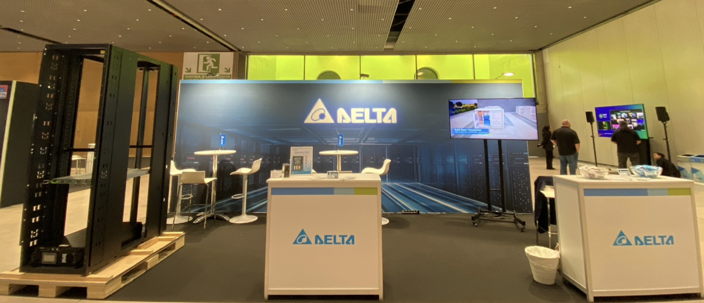
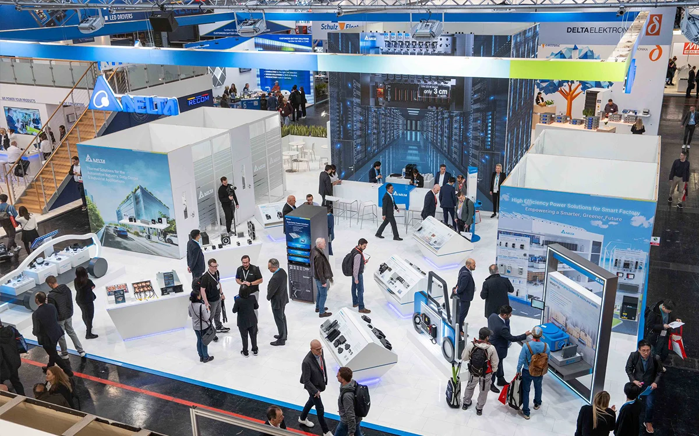

Profile
I own B2B events from the first concept to the pipeline they produce: trade shows, VIP events and account-based programmes across EMEA and Asia-Pacific.
At Delta Electronics EMEA I own the trade show and account-based event programme for the data centre and power portfolios. I also plan and allocate the EMEA marketing and events budget.
At OCP EMEA Barcelona 2026, the campaign I built with sales took the result from around ten leads to 60+ from a defined target list.
Before Europe, I spent 14 years at TAITRA, the organiser of COMPUTEX. For 2–3 international trade shows a year I was the sole owner of the event programme, from the opening ceremony to the VIP and buyers' nights. I also had two overseas postings, leading local teams in Jakarta and Chengdu.
I came to the Netherlands in 2022 for a full-time MBA at TIAS / Tilburg University. I stayed on to work here. Native Mandarin speaker.
Open to Marketing Manager and Event Manager roles in B2B tech in the Netherlands.
Selected Work
Account-Based Marketing: OCP EMEA
OCP EMEA is a cloud and data centre industry forum, not a large exhibition. The value is in who you meet, not how many people walk past. I attended Lisbon 2024 for the first time as an observer. I have owned Delta's presence since Dublin 2025.
I own the event end to end: registration, format, pre-event campaign, invitations, on-site attendance tracking and CRM hand-off to sales.
2025 was a straight execution of the existing format. It produced around ten leads. For 2026 I rebuilt it as an integrated campaign. I sourced the content for a product landing page and agreed the structure with the sales lead. Corporate marketing built the page and I reviewed and refined it. I made the campaign video myself in Canva. I personalised invitations from the sales team's priority account lists, not a marketing-built one. I tracked each invitation from registration to on-site attendance and consolidated the leads in CRM for sales to follow up.
Invite from the sales team's priority-account list, one name at a time, instead of a general invitation. Ten leads the year before told me the problem was the audience, not the reach.
60+ leads from a defined target list in 2026, up from around ten the previous year. That is roughly a six-fold increase on the same event.
Both published on Delta Electronics EMEA's LinkedIn:
2026: pre-event campaign video (Barcelona)
2025: campaign post (Dublin)

Both editions taught me that a small, precisely targeted list works better than a general invitation. If I ran it again, I would start personalised outreach earlier and reuse the landing page, instead of building the campaign from scratch each year.
Trade Show Programme: electronica 2024
electronica is the world's leading trade fair for electronic components. Five Delta product teams each wanted their own presence, messaging and exhibit space.
Programme lead. Owned exhibit selection, messaging, on-site execution and the post-show follow-up process.
I ran the programme from exhibit selection through messaging to on-site execution. I worked with five product teams and their agencies.
One shared plan for five teams, instead of five parallel ones. Every lead went into CRM at the point of conversation, not after the show.
100+ leads captured in Microsoft Dynamics. 30 were assigned target customers and 5 are industrial accounts that still order today.

The event brought together five product teams, each with its own marketing resources. If I'd had full visibility into what each team was investing upfront, I could have aligned post-event follow-up across all five instead of coordinating it team by team.
Invitation-Only VIP Preview Night: Taiwan International Boat Show 2016
A first-time event: a closed, invitation-only evening for VIP guests to see the Taiwanese-built yachts on show the night before the exhibition opened, with more chances to talk with the makers than a normal show day allows. About 80–100 guests, by design: a closed preview for the most senior VIPs.
I designed the event myself and was its single point of contact: concept, sponsors, invitations and the evening itself.
I built the evening around the premium positioning of the yachts themselves rather than running a standard reception. I approached and secured The Macallan and designer furniture brands as sponsors to dress the venue.
Sponsors covered the whole evening, so it cost TAITRA nothing. At the time I put the value of that sponsorship at about 13% of the show's budget. Guests saw the yachts and met the exhibitors the night before the show opened.

The aim was more conversations between the VIP guests and the makers, and what I delivered was the premium experience. It was the first edition, and I moved to my overseas posting before a second one. Next time I would plan how to create those conversations, not only the setting.
Running an Overseas Office: Taiwan Trade Center Jakarta
One of TAITRA's 60+ overseas offices. Two staff were posted from headquarters: a Director and a Manager. I was the Manager.
Reporting to the office Director, I led a local team of eight and managed the office's operating budget: local payroll, premises and programme spend.
Prepared the budget proposal for each headquarters-agreed programme, adapted those programmes for the Indonesian market rather than running them exactly as headquarters sent them, and rebuilt buyer recruitment around repeat relationships instead of one-off invitations.
The office ranked 2nd of 62 TAITRA offices worldwide for buyer recruitment, bringing 600+ Indonesian buyers a year to sourcing events in Taiwan.


Local practice and headquarters' priorities didn't always line up. During Ramadan, for example, business visits are best avoided. Headquarters' scheduling didn't always account for that. If I did it again, I would flag the local calendar earlier in the planning process, rather than negotiating around it after the schedule was already set.